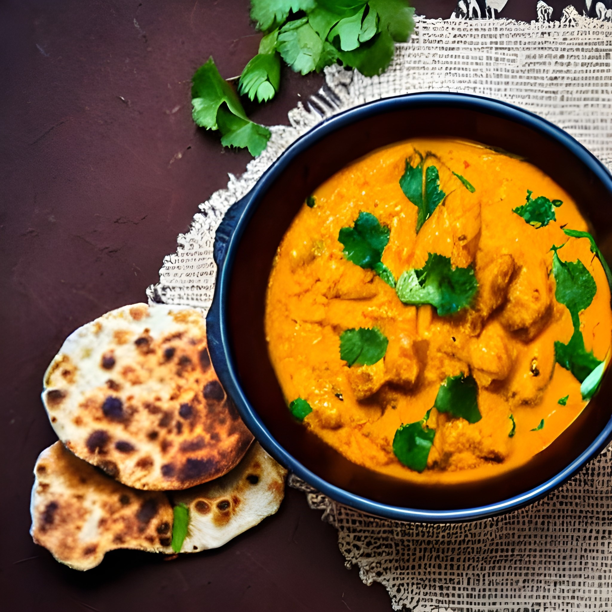
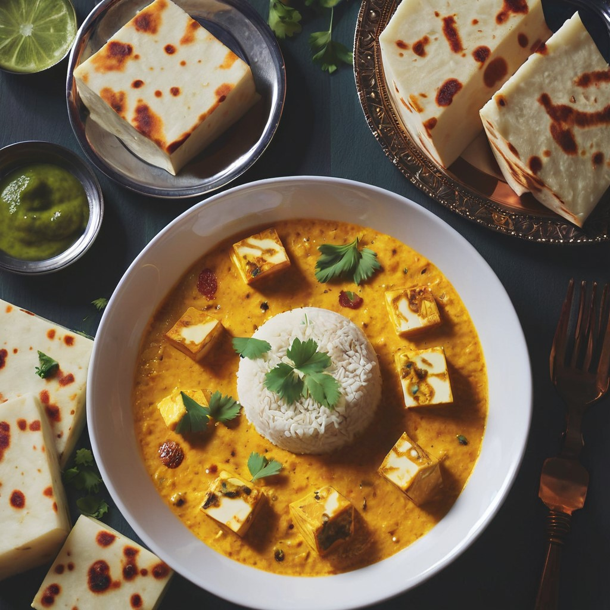

Back
Shahi Paneer Recipe
 
Ingredients:
Paneer - 250g, cubed
Onion - 2 large, finely chopped
Tomato - 2 medium, pureed
Ginger-Garlic Paste - 1 tbsp
Cashew Nuts - 10-12 pieces, soaked in water
Green Chili - 1, slit
Yogurt - 1/2 cup
Cream - 1/4 cup
Ghee - 2 tbsp
Oil - 1 tbsp
Cumin Seeds - 1 tsp
Cinnamon Stick - 1 inch
Cardamom Pods - 2-3
Cloves - 3-4
Turmeric Powder - 1/2 tsp
Red Chili Powder - 1 tsp
Garam Masala - 1 tsp
Salt - to taste
Fresh Cream - for garnishing
Coriander Leaves - for garnishing
Cooking Instructions:
Heat ghee and oil in a pan, add cumin seeds, cinnamon stick, cardamom pods, and cloves. Sauté until fragrant.
Add chopped onions and sauté until golden brown.
Add ginger-garlic paste and green chili. Sauté for 2-3 minutes.
Add tomato puree and cook until oil separates.
Meanwhile, grind soaked cashew nuts into a smooth paste.
Add the cashew paste to the pan and mix well.
Add turmeric powder, red chili powder, garam masala, and salt. Mix and cook for 2-3 minutes.
Add yogurt and cream. Stir continuously and cook until the gravy thickens.
Add cubed paneer and gently mix with the gravy.
Cover and simmer for 5-7 minutes.
Shahi Paneer is ready to serve. Garnish with fresh cream and coriander leaves.
Cooking Time: Approximately 30 minutes
Serves: 3-4 people